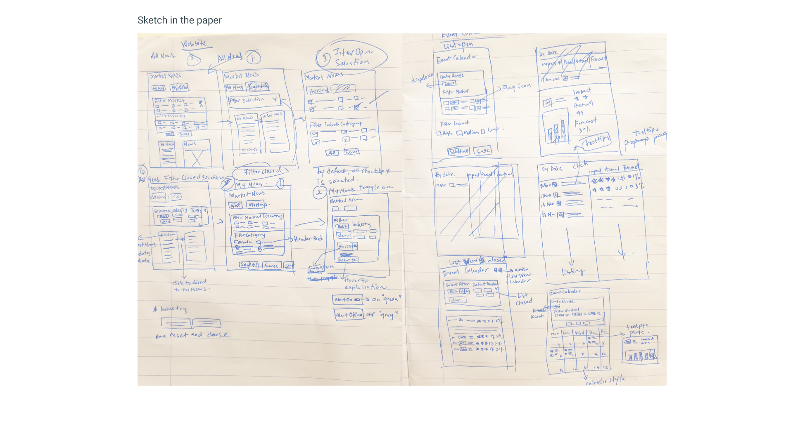
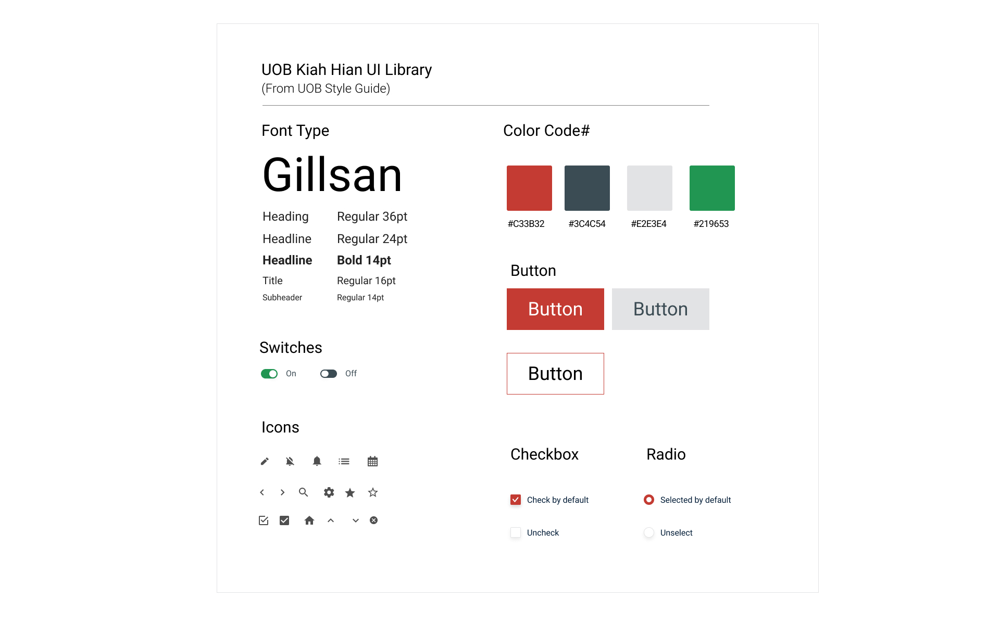

Design
Sketches
I did a few quick sketches to help me organize my thoughts
Design System
High-Fidelity Prototype
I make the UI become simpler with the UOB style guide colors so that users are more comfortable when using the application do stock analysis. I tried to focus on features related to solving some of the major desired outcomes found in the online research.
 Click here to access the interactive prototype
Click here to access the interactive prototype